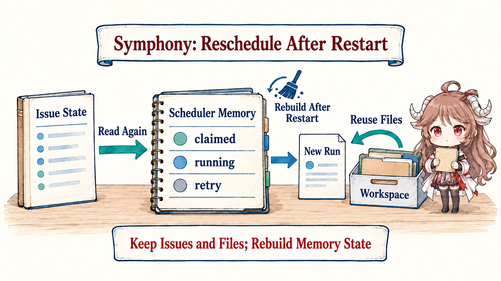
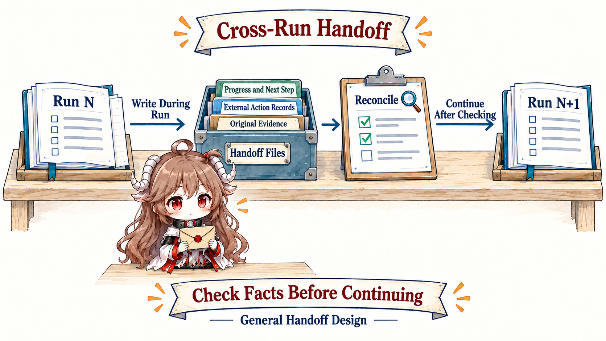

Long-lived work rarely begins and ends with one chat window. A task may wait for CI, review, or approval, and it may be split across multiple runs because time or environments expire. To let a later run truly continue, the system must separate the task from the current conversation.
After this article: you should be able to define the Outer Loop and its minimum parts, then explain recovery, concurrent task claims, retries, and uncertain outside actions.
Source note: this article uses Symphony’s public specification and Elixir implementation to explain cross-run scheduling, with Harness engineering and Anthropic’s long-running harness as design context. Source links pin a verified snapshot. Durable task records, cross-instance leases, and effect logs are engineering choices, not capabilities Symphony necessarily provides. Community tutorials add teaching perspectives.
1. Understand the Outer Loop through a failure story
1.1 Start with a task that has no Outer Loop
In the first run, an Agent finds the payment-test failure and changes the code, but the run ends before full verification. A second run receives only the original request, so it investigates from the beginning. Then a create-PR request times out; the new run assumes it failed and creates a second PR.
The model is not necessarily less capable. What is missing is cross-run control: how far did the task get, which run may change it now, what result may finish it, where should recovery begin, and did an outside action actually succeed?
1.2 Learn four small concepts first
- Work item: the long-lived task to finish, such as “fix the payment tests and pass review.” It may live for hours or days.
- Run: one limited attempt by an Agent to advance the work item. It may finish, stop, or wait.
- Agent Loop: the think–act–observe cycle inside one run.
- Outer Loop: the control flow around multiple runs that triggers, assigns, verifies, recovers, and retries the same work item.
In one sentence: the Agent Loop advances one run; the Outer Loop keeps the task alive across runs until it finishes or passes to a person.
1.3 Follow one work item from arrival to completion
- Create the task: a failing test event or person creates a work item with a goal and completion criteria.
- Select the task: the system chooses an item that is ready, appropriately prioritized, and within capacity.
- Launch a run: give the Agent the goal, tools, authority, and previous progress.
- Persist progress: record confirmed facts, changes, test results, and unfinished work throughout the run.
- Verify independently: CI, review, or a business check accepts the result; the Agent's “done” is only a candidate conclusion.
- Decide what follows: finish on success, run again with new evidence, wait for authority, or escalate after ineffective attempts.
These six steps allocate the responsibilities of a complete work system; an individual scheduler may implement only part of them. Queue, lease, checkpoint, and idempotency are protections added when tasks multiply, runs can stop, or outside actions can be duplicated.
2. Turn the work item into an operating control flow
2.1 Why the task must become a separate work item
Chat history preserves a conversation, but it is not the task itself. A work item first needs only a stable id, goal, completion criteria, current state, completed work, and next step. As the system grows, add priority, dependencies, current worker, attempt count, and outside-object references. A run is one processing record attached to the work item; it should not replace the work item.

Task: fix the payment-module regression
State: in progress
Done when: payment tests pass and review accepts the change
Confirmed: the expired-order check is missing
Changed: payment.go
Next: run the payment testsIn this design, the latest copy of this work item stays in durable storage used by the Outer Loop, not in one prompt or chat transcript. At launch, the system puts the current goal, permissions, and progress into the Agent input. The run writes new facts through checkpoints. Only after the verifier passes does the Outer Loop move the task from awaiting validation to completed. Later runs and human reviewers continue from the updated item and its artifact references.
2.2 Turn the six steps into operating responsibilities
These are not a one-pass linear pipeline. Progress recording begins before the run and continues through execution and final handoff; otherwise a crash before verification leaves nothing to recover. Later sections explain concurrent claims, checkpoints, and outside-effect records one at a time. For now, remember the responsibilities in ordinary language.
| Phase | Control question | Fact it must leave |
|---|---|---|
| Trigger | Which event or person created the task? | Source, duplicate status, time |
| Select work | Which task can start now? | Selection reason and current worker |
| Launch run | Which goal, tools, authority, and progress does this Agent receive? | Run configuration, input version, previous progress |
| Verify | Which independent checks accept the result? | Check evidence and failure reason |
| Persist | Which progress and outside changes must survive? | Recovery point and action record |
| Retry / next | Finish, wait, change strategy, or ask a person? | Decision reason and remaining attempts |
2.2.1 How Symphony hands off the payment task
Once the payment problem becomes an issue, Symphony polls, selects work, launches a worker, and checks its state again. Its specification defines a scheduler/runner and tracker reader: the coding agent normally changes ticket states, comments, and PR links through tools. The team’s workflow still defines CI and review acceptance. A successful handoff may stop at Human Review; it need not mean the business task is Done.
Inside one worker, AgentRunner refreshes the issue after each normally completed turn. While the issue remains active and routable, it continues the current session up to the per-run turn limit. When the worker exits normally without becoming input-blocked, the orchestrator schedules a continuation check after about one second and rereads the issue before deciding on another worker. The source field completed is local bookkeeping; dispatch does not use it to block subsequent runs.
Payment issue remains active
→ turn completes: refresh issue; continue same session below turn limit
→ worker reaches turn limit: exit normally
→ check after about 1 second: launch a worker if still eligible
→ issue enters a non-active handoff state: release claim
→ CI / review / human acceptance: decide completion under team rules2.3 Prevent two workers from writing the same task
Start with one scheduler. Symphony uses one GenServer to serialize scheduling changes. Before dispatch, it checks claimed, running, and blocked, then total concurrency, issue-state limits, and worker capacity. Those checks and the claim recorded at launch prevent duplicate dispatch by that orchestrator. These are process-local sets and maps, not a lease service shared by independent schedulers.
Multiple schedulers claiming the same payment issue introduce a separate need for cross-instance exclusion and failover. A common design stores a time-limited claim in shared storage: the worker renews it, and another worker may claim only after expiry. This is a lease. The storage or recipient of outside writes must also check an increasing fencing token to reject stale workers’ late writes. A prompt saying “do not repeat the action” cannot establish that guarantee.

When a deployment needs these extensions, each protects a different condition:
- Deduplication: identical external events create one work item.
- Lease: one run may write the task; read-only investigation may use a separate parallel policy.
- Heartbeat: distinguish a long run from a dead worker.
- Fencing token: a late write from an expired lease cannot overwrite the new worker's state.
- Backpressure: launch according to resources, risk, and human review capacity.
queued
-- worker-A claim, fence=1 --> running(A)
-- lease expires -----------> claimable
-- worker-B claim, fence=2 --> running(B)
complete(worker-A, fence=1) # rejected: stale lease
complete(worker-B, fence=2) # accepted3. Advanced: recovery, retries, and effects across runs
3.1 How the next run continues after interruption
A checkpoint is a saved starting point from which the next run can recover. Return to the payment story. Before Run 1 ends, it records the goal, confirmed cause, change to payment.go, unrun tests, and log references. Run 2 first verifies that the file and references are still current, then continues from “run the payment tests” instead of investigating again.
Symphony has a narrower recovery contract: it initializes fresh scheduling state, polls the tracker, and reuses preserved workspaces. Its specification explicitly excludes restoring retry timers, running sessions, and live worker state from the previous process. A surviving directory preserves code and files; it does not preserve the old conversation or attempt counters. The workflow must still have the Agent record verifiable progress, tests, and outside-object references for the next run to recheck.
Anthropic’s long-running harness experience emphasizes clear progress files, git state, and clean task slices so a later agent can continue. Such a handoff serves machines and people: structured fields make recovery testable, narrative preserves decisions and surprises, and raw artifacts preserve evidence.

| Handoff field | Question | Recovery check |
|---|---|---|
| Goal / done | What must be accomplished? | Is it still valid? |
| Confirmed facts | What is known? | Are sources accessible and fresh? |
| Effects | Which external state already changed? | Reconcile with the world |
| Attempts | What failed and why? | Avoid repeating the same strategy |
| Open / next | What blocks and what is the smallest next step? | Are capability and authority sufficient? |
| Artifacts | Where are logs, diffs, tests, and screenshots? | Are references complete? |
3.2 Failure does not always mean “try again”
An inner-loop tool retry is different from replaying an entire run. The latter costs more and can duplicate effects. Before every relaunch ask: what failed, what changes in the new run, have old effects been reconciled, and how much budget remains? “Try once more” is not a sufficient answer.
Persist a retry budget with the work item when total attempts or spend must remain bounded across process restarts. Symphony currently keeps attempt counters and timers in memory and uses exponential failure backoff with a maximum delay. A delay cap is not a total-attempt cap, and restart does not restore these retry records. Vary policy by class: transient infrastructure errors back off; authority blocks wait for approval; repeated invariant failures escalate; an uncertain external write reconciles before replay.
3.3 A timeout does not prove that the outside action failed
Creating a PR, issuing a refund, or sending a notification can succeed while its response is lost. If the outer loop sees only a timeout, it may repeat the effect. Retriable effects need stable idempotency keys and a status log with proposed, started, committed, and observed states. Recovery queries the outside system before continuing, compensating, or completing. The business workflow must implement this design; an issue claim in Symphony does not make PR creation or refunds idempotent.
effect_key = "issue-1842:create-pr:v3"
status log: proposed → started → unknown
remote: PR #41 already exists
reconcile(effect_key)
→ find PR #41
→ status log: committed → observed
→ do not create PR #42timeout → retry → two PRs. A safe flow is timeout → reconcile → reuse the existing PR. Persistence must therefore begin before the effect, not after verification.- Record “the call happened” separately from “the world changed.”
- Prefer external API idempotency; otherwise use a business key plus reconciliation query.
- Model and audit compensating actions; not every effect is reversible.
- An effect with unknown state requires reconciliation; it is not an ordinary failure to retry.
3.4 Ask people for judgment, not routine polling
OpenAI’s Harness engineering starts from scarce human attention. Interrupt people only when their judgment is needed: conflicting goals, high-risk permission, quality that cannot be automated, or a decision to spend more budget. An escalation package should be concise but sufficient: what happened, what is verified, options and impact, recommendation, and deadline.
4. Review the Outer Loop before launch
| Question | Minimum mechanism | Without it |
|---|---|---|
| Can duplicate events create duplicate work? | Dedupe key | Concurrent duplicate effects |
| Which worker across schedulers may write now? | Shared lease plus recipient fencing checks | Double writes or permanent stall |
| How is completion accepted? | Independent verifier | Final prose becomes outcome truth |
| What does the next run continue from? | Checkpoint plus artifacts | Lost state and repeated investigation |
| What changes on retry? | Error class plus persistent budget | Unbounded spend |
| What if an effect is uncertain? | Idempotency plus action status log | Duplicate refunds, PRs, or messages |
| When does a person take over? | Escalation policy | The task is ignored or people are constantly interrupted |
The outer loop turns runs into an operable work system. It still needs external truth for the “verify” step. The final part covers evals and feedback: measure outcomes, localize failures, and turn evidence into safe system change.
Official sources
- OpenAI Symphony: public specification and recovery limits
- OpenAI Symphony: Elixir orchestrator implementation
- OpenAI: An open-source spec for Codex orchestration: Symphony
- OpenAI: Harness engineering
- Anthropic: Effective harnesses for long-running agents
- Anthropic: Managed agents